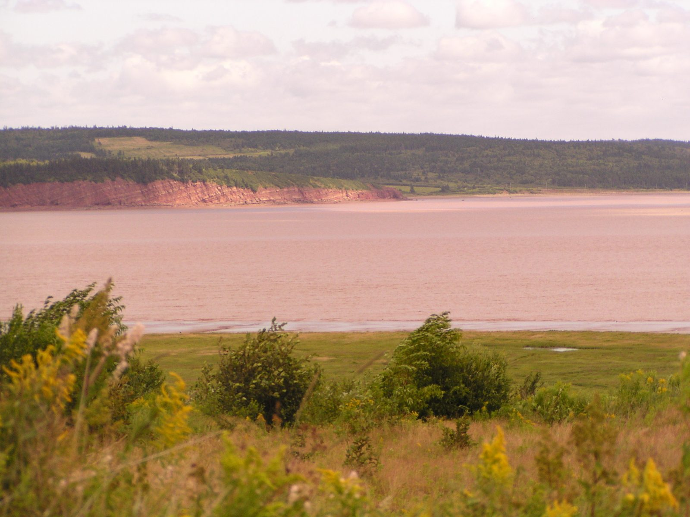

Choose a province to see its latest election results.
October 21, 2024 · 49 seats · Majority: 25 seats. The Liberals took 31 of 49 seats.
Majority: 25 seats.
| Party | Seats | Votes |
|---|---|---|
| Liberal | 31 | 180,806 |
| Progressive Conservative | 16 | 131,332 |
| Green | 2 | 51,558 |
| New Democratic | 0 | 4,703 |
| Libertarian | 0 | 1,710 |
| People’s Alliance | 0 | 3,265 |
| Social Justice | 0 | 476 |
| Consensus NB | 0 | 278 |
| Independent | 0 | 533 |
| Total valid votes | 49 | 374,661 |
Tap a district on the map, or pick one below, to see all its candidates. Districts are coloured by the winning party.
Pick a district to see all its candidates.

376,054 ballots counted, including 1,393 rejected ballots. Party vote shares are not shown here because they were not part of the verified figures for this page.
Source: Elections New Brunswick, Report of the Chief Electoral Officer, p. 51 (Popular Vote by Party) — electionsnb.ca